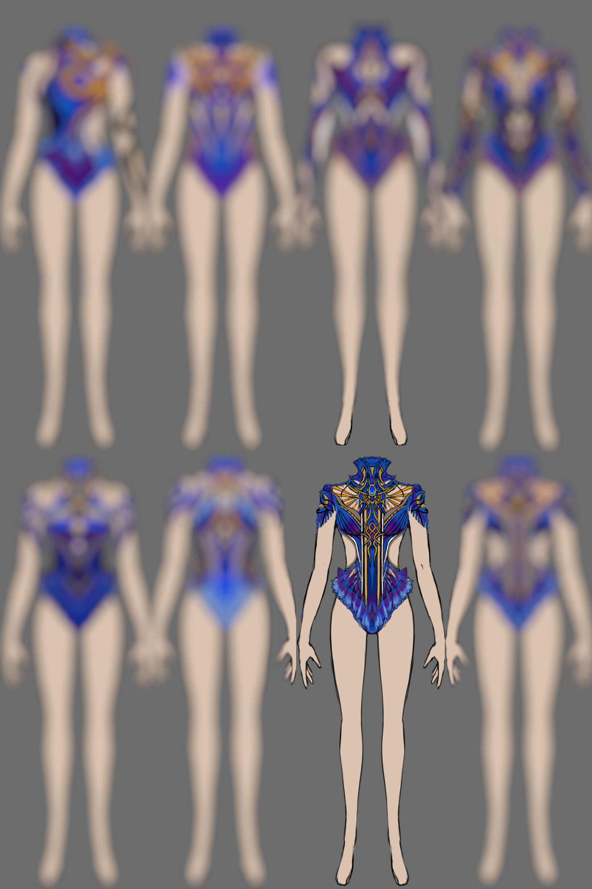
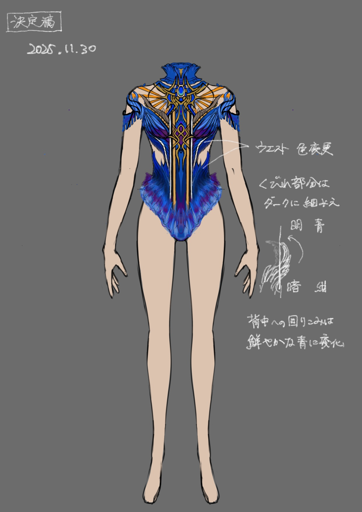
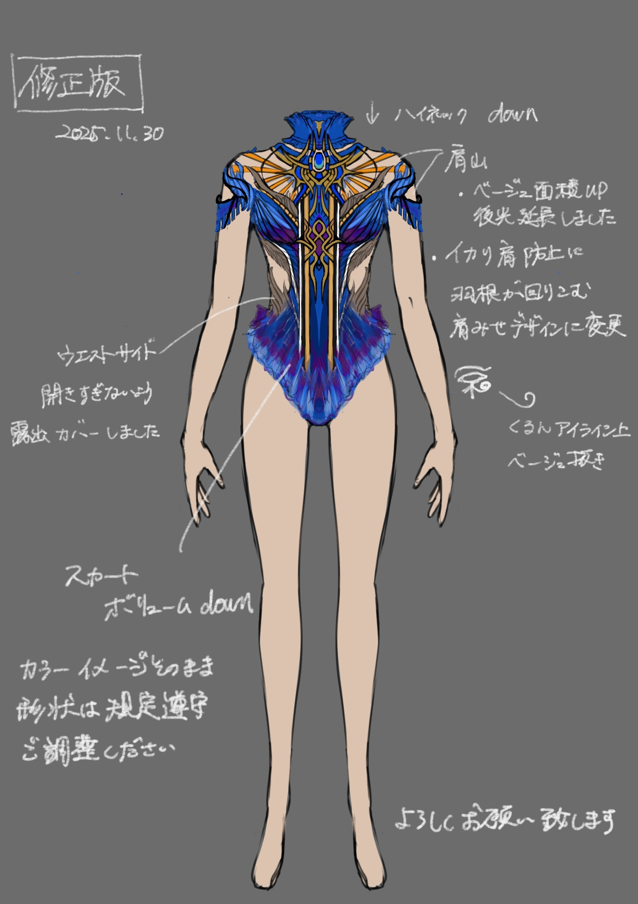
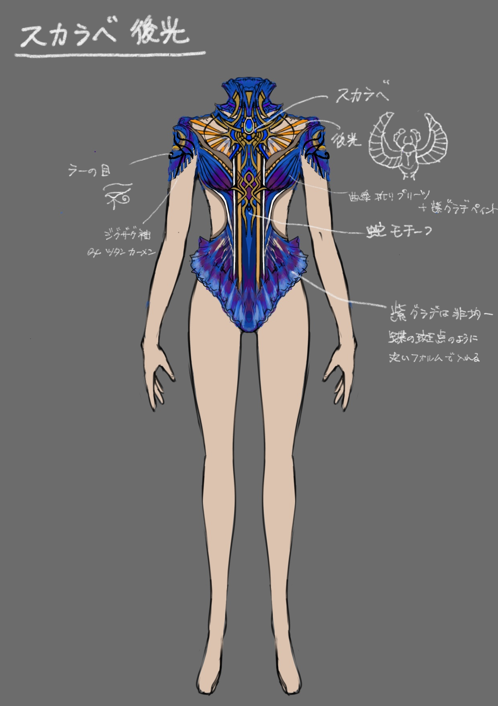

Top-tier Team: Okayama Minami — 2026 Season 岡山県立岡山南高等学校 新体操部 2026 団体衣装

新体操は、「人間が人間を超える」瞬間を見せる競技。
激しい動きの中でも、一瞬たりとも演技の美しさを崩さず
どの角度からみても気迫で圧倒する勝負の思考を、新体操のフロアへ。
芸術点の0.1に挑む、内にある形なき熱量を目に見える形へと引き出すこと。
それは、内なる精神を顕在化させた「意志」を纏うということ。


The Origin of My Creativity
私のクリエイティビティの原点は、皮膚に直接描くボディペイントにある。
身体との隔たりが「0」の状態で、人間の身体美を最大化させるラインを追求。
その「身体に纏う」思考はテキスタイルデザインを経て、現在の「衣装」という形へと結実した。
アクションの最前線で得た経験を血肉とし、美術解剖に基づいた流線で、あらゆる角度から「動」に順応させる造形的デザイン。
私が担うのは、選手の内に秘められた形なき熱量を衣装として引き出し、着る人の意志を可視化してもう一度自分自身に纏わせること。
衣装を単なる布ではなく、内側から溢れ出る「息吹」そのものとして描く。
そのプロセスを経て、衣装は「外側から被せるもの」を越え、内側から溢れ出た「身体の一部」へと変貌を遂げる。
内なる精神、身体美、そして衣装が極限まで融合したとき。
そこには、0.1点の壁を突き破る「勝利の気迫」が宿る。
- Okayama Minami Gymnastics Academy
- Head Coach: Sayuri Hata
- Costume Design: Ishikawa Saki
- Costume Maker: Naoko Hakamada
- 岡山県立岡山南高等学校 新体操部
- 監督：畑 小百合
- 衣装デザイン：石川 彩希
- 衣装制作：袴田 直子
Mythological Radiance | Ghosts of the Nile
ご依頼テーマ・楽曲：エジプト × ロイヤルブルー “Ghosts of the Nile”
エジプト神話の神秘をフロアへ召喚するためのデザインラフ。
スカラベを透過する太陽神ラーの後光と、静謐な月の光。
オファーされた世界観を深く咀嚼し視覚化する。
身体の動きと調和させながら、選手の躍動を神々しく鮮烈な存在へと昇華させます。
Client Request: Egypt × Royal Blue — "Ghosts of the Nile"
The master blueprint engineered to summon the mysteries of Egyptian mythology onto the competition floor.
Inspired by the radiant Halo of the Sun God Ra shining through the sacred scarab, contrasted against the quiet glow of lunar light.
A process of dissecting, interpreting, and materializing the requested world-view into a coherent visual language.
Harmonized with physical movement to transform the athlete's performance into a divine and vivid spectacle.




Concept Logic | Sacred Symmetry
団体戦の一糸乱れぬ演技の神秘性を高める、神聖な対称図案。
美術解剖学に基づいた流線が 審判目線の遠景からでも選手の四肢をより長く、より鮮明に際立たせます。
ただ美しいだけではない、すべてのラインと装飾には理由がある。
審判の視線を一点へ集約し、演技そのものを「勝利」へと導くための必然のデザインです。
Sacred symmetry engineered to heighten the visual unity and mystique of perfectly synchronized group performances.
Anatomically informed streamlines extend and define the athletes' limbs, maintaining clarity and impact even from the judges' distant perspective.
Every line, contour, and ornament serves a purpose.
This is not mere decoration.
It is a calculated visual system designed to concentrate the judges' attention, guiding the performance itself toward competitive advantage and victory.
Sacred Axis | 360° Seamless Logic
360°どこから見ても途切れない、完全なるシームレス設計。
「太陽神ラーの後光」と「月の光」が交差する側面こそが、このデザインの真髄です。
ピボットの回転軸を視覚的に強化し、回転の鋭さを極限まで際立たせる。
回転した瞬間に審判の視線を射抜く、勝つための「動性」がここにあります。
A flawless, 360-degree seamless design with absolutely no blind spots.
The true essence of this design lies upon the flanks, where the Halo of the Sun God Ra and a Lunar Eclipse intersect.
Visually reinforcing the pivot axis to maximize and elevate the sharpness of every rotation.
Engineered with a competitive dynamic built to capture the judges' gaze the exact fraction of a second the athlete spins.
Kinetic Visibility | Dynamic Color Logic
特撮アクションの最前線で培った「動」への順応と、美術解剖学に基づいた流線型デザイン。
審判の評価を最大化するために計算された、フロアに沈まない圧倒的な遠景発色。
衣装の機能は、選手の士気と演技のポテンシャルを極限まで高めること。
芸術点を確実に「加点」へ導くための、戦術的なデザインツールです。
Adapted from the front lines of action costume design, this silhouette responds dynamically to movement while embracing aerodynamic forms informed by artistic anatomy.
Engineered to maximize judging visibility through exceptional long-range color projection that never fades into the competition floor.
The costume functions as more than an aesthetic layer; it is designed to elevate the athlete's confidence and unlock the full potential of the performance.
A strategic design tool created to generate measurable artistic impact and contribute directly to scoring value.
Swarovski Engineering | Precision Placement
競技規定を熟知した熟練のオートクチュール技術による、光を支配するスワロフスキー配置。
フロアに沈まない発色設計と、審判目線の遠景で生じる光の膨張まで計算された 精密なクリスタルワーク。
一粒ごとの角度と配置を積み重ね、動きの中で最大限の輝きを放つ シャープな乱反射を設計しています。
Color architecture engineered to never fade into the competition floor, executed with master-level couture precision.
Strategic Swarovski placement designed to govern the behavior of light while remaining fully compliant with technical competition regulations.
Every crystal is positioned with calculated intent, generating sharp reflections that counteract long-distance visual blur and preserve clarity in motion.
Top-tier Team: Okayama Minami — 2026 Season
Group Champions | 2026 OHK Cup / Tokyu Cup
第38回OHK杯・東急杯にて団体優勝、総合2位を獲得。
全国選抜大会では団体5位入賞を果たした、頂点を目指す選手たちのための意匠です。
Group Champions | 2026 OHK Cup / Tokyu Cup
Awarded Group Champion at the 38th OHK Cup / Tokyu Cup, achieving 2nd place overall.
The team also secured 5th place at the National Selection Tournament, competing among Japan's top rhythmic gymnastics programs.
A design engineered for athletes striving toward the highest level of performance and competitive excellence.
Engineering Excellence for Your Team
競技衣装デザインのご相談
プロアスリート・個人選手から、学校・クラブチームまで、それぞれの個性と特性に合わせた包括的なビジュアル戦略をご提案します。
卓越した耐久性と、フロアを支配する圧倒的な視覚効果を すべての表現者のために。
Costume design consultation for competitive athletes, schools, and club teams.
From professional performers to emerging talent, each project is developed through a tailored visual strategy.
Engineered for exceptional durability, competitive visibility, and lasting performance impact.
Bringing together design, movement, and visual storytelling for athletes who aim higher.